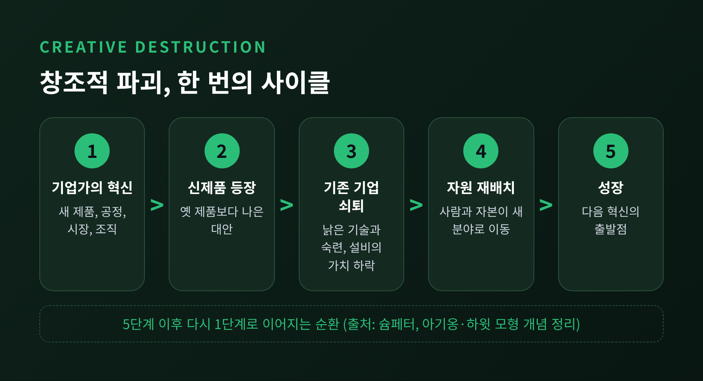
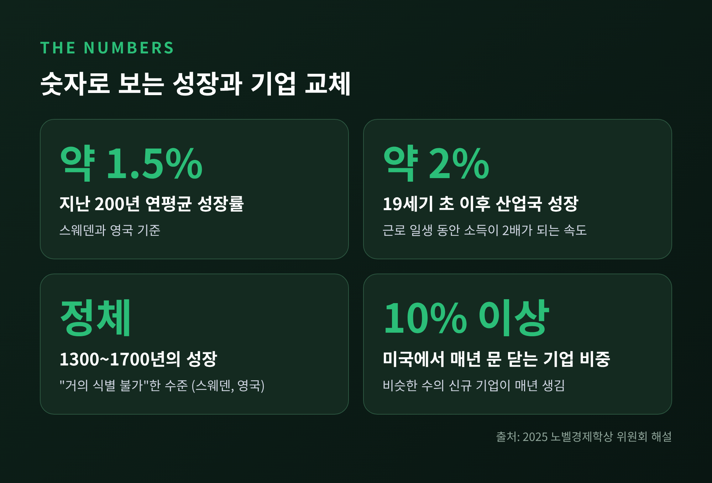
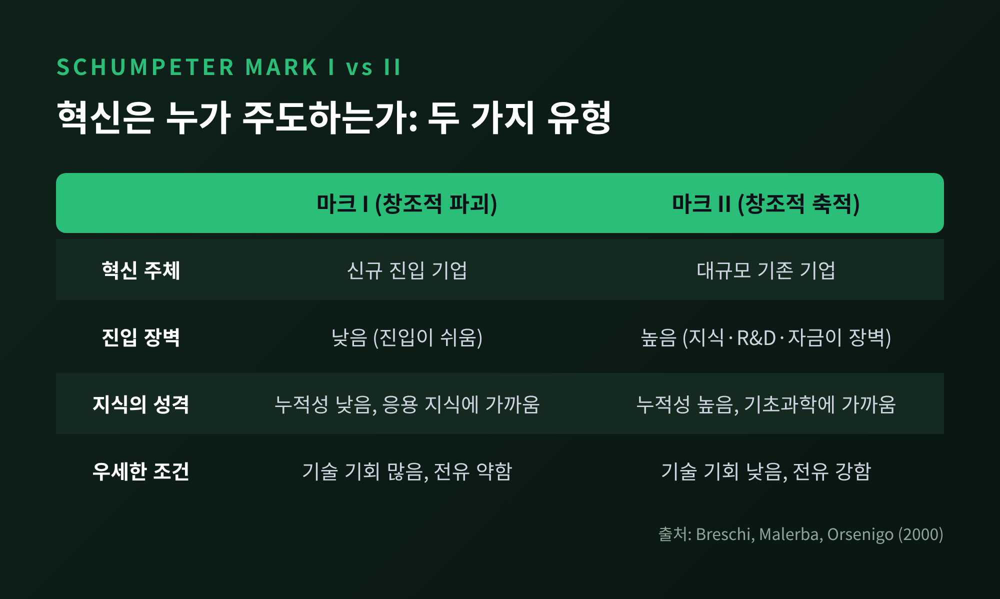
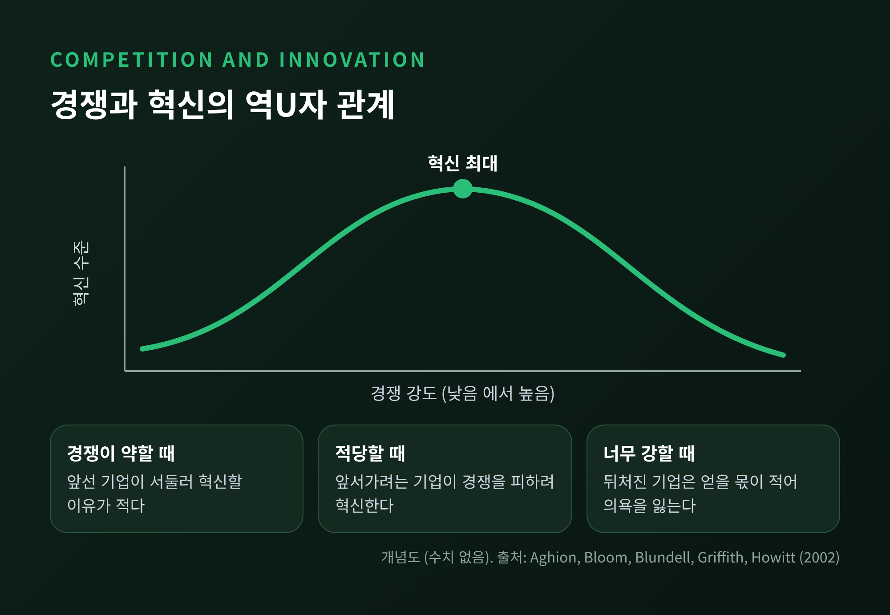
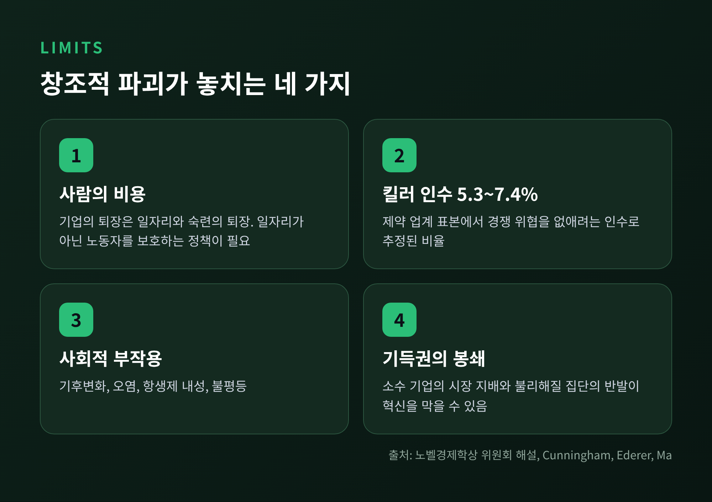

슘페터의 창조적 파괴, 혁신이 낡은 산업을 무너뜨리며 성장하는 원리

이번 글에서는 슘페터가 말한 창조적 파괴의 원리를 정리해 보겠습니다. 새로운 혁신이 기존 기업과 산업을 밀어내는 과정이 곧 경제성장의 엔진이라는 것이 핵심입니다. 이어서 기업 규모와 혁신의 관계를 묻는 슘페터 가설, 코닥과 같은 현대 사례, 그리고 이 이론이 놓치는 한계까지 차례로 살펴봅니다.
■ 창조적 파괴란 무엇인가
요제프 슘페터는 1942년 『자본주의, 사회주의, 민주주의』에서 창조적 파괴를 "자본주의에 관한 본질적 사실"이라고 불렀습니다. 자본주의를 "산업적 돌연변이"의 과정으로 보았고, 이 과정이 경제 구조를 안에서부터 끊임없이 뒤엎는다고 설명했습니다. 낡은 것은 부수고, 새것은 계속 만들어 냅니다.
여기서 말하는 혁신은 발명품 하나에 그치지 않습니다. 새로운 소비재, 새로운 생산·운송 방법, 새로운 시장, 새로운 산업 조직까지 모두 포함합니다. 슘페터는 이런 혁신을 일으키는 주체로 위험을 감수하는 기업가를 꼽았습니다.
그 결과 낡은 재고와 기술, 숙련, 설비가 한꺼번에 쓸모를 잃습니다. 그는 이를 '창조적 파괴의 폭풍'이라 불렀습니다. 폭풍이 지나간 자리에서 자원이 새 분야로 옮겨 가고, 그 이동이 성장을 만든다는 논리입니다.

흥미로운 대목은 경쟁의 성격입니다. 슘페터는 혁신에서 오는 경쟁을 "상존하는 위협"이라 불렀습니다. 이 위협은 실제로 공격하기 전부터 기업을 단속한다는 것이 그의 설명입니다.
■ 숫자로 보는 성장과 기업의 교체
이 원리가 단순한 비유가 아니라는 점은 2025년 노벨경제학상이 보여 주었습니다. 스웨덴 왕립과학원은 그해 10월 13일 필리프 아기옹과 피터 하윗, 그리고 조엘 모키르를 수상자로 발표했습니다. 아기옹과 하윗의 공로는 '창조적 파괴를 통한 지속 성장 이론'이었습니다. 두 사람은 1992년 논문에서 이 과정을 수학적 모형으로 옮겼습니다.
모형의 논리는 간결합니다. 더 나은 제품이 나오면 옛 제품을 팔던 기업은 손해를 봅니다. 혁신이 새롭다는 점에서는 창조이고, 기존 기업을 밀어낸다는 점에서는 파괴입니다. 선두 기업은 특허로 얻는 독점적 이윤 덕분에 연구개발에 나서고, 연구개발이 늘수록 다음 혁신이 빨리 와서 선두가 교체됩니다.
노벨위원회가 정리한 수치를 보겠습니다. 지난 200년 동안 스웨덴과 영국의 연평균 성장률은 약 1.5퍼센트였습니다. 19세기 초 이후 여러 산업국은 연 2퍼센트에 가까운 성장을 이어 갔는데, 이 속도면 한 사람의 근로 일생 동안 소득이 두 배가 됩니다. 반면 1300년부터 1700년까지 스웨덴과 영국의 성장은 "거의 식별할 수 없는" 수준이었습니다.
예전엔 성장이 잠깐 오르다 꺼지는 일이 보통이었습니다. 지금은 성장이 지속되는 것이 정상처럼 여겨집니다. 노벨위원회는 이 변화를 지난 두 세기에 처음 나타난 현상으로 설명합니다.
기업 쪽 숫자도 같은 그림을 그립니다. 위원회 해설에 따르면 미국에서는 매년 전체 기업의 10퍼센트가 넘게 문을 닫고, 비슷한 수의 새 기업이 생깁니다. 살아남은 기업 안에서도 일자리가 계속 생기고 사라집니다. 창조와 파괴는 특별한 사건이 아니라 매년 반복되는 일상인 셈입니다.

■ 슘페터 가설: 큰 기업일수록 혁신을 더 할까
슘페터의 생각은 시기에 따라 달라졌습니다. 1911년에는 개인 기업가를 혁신의 주인공으로 보았습니다. 1942년에는 과점 시장의 대기업이 혁신의 중심이라고 주장했습니다. 독점기업도 잠재적 진입자의 압력 때문에 치열한 경쟁 속에 있는 것처럼 행동한다고 보았습니다.
후대 연구자들은 이 두 시기를 '마크 I'과 '마크 II'로 구분했습니다. 마크 I은 진입이 쉬워 신규 기업이 혁신을 이끄는 유형이고, 마크 II는 축적된 지식과 자금이 진입장벽이 되어 대기업이 혁신을 이끄는 유형입니다. 브레시, 말레르바, 오르세니고는 유럽 특허 자료와 세 나라 연구개발 관리자 설문으로, 어느 쪽이 우세한지가 산업의 기술 체제에 달려 있음을 보였습니다. 기술 기회가 많고 지식 보호가 약하며 축적성이 낮으면 마크 I이, 그 반대 조건이면 마크 II가 나타나는 경향입니다.

그렇다면 대기업이 더 혁신적이라는 가설은 데이터로 확인될까요. 대체로 그렇지 않았습니다. 코헨, 레빈, 모워리가 1987년에 발표한 연구는 산업 효과를 통제하면 기업 규모가 연구개발 집약도에 주는 영향이 "매우 작고 통계적으로 유의하지 않다"고 보고했습니다. 사업부 규모와 기업 규모가 함께 설명하는 비중은 1퍼센트에도 못 미쳤고, 산업 효과는 거의 절반을 설명했습니다. 겉보기 상관도 연구개발 비중이 유난히 높은 소수의 초대형 기업이 만든 것이었습니다.
1996년 OECD 보고서에서 시메오니디스도 문헌을 개관한 뒤 슘페터 가설을 뒷받침하는 증거가 거의 없다고 결론지었습니다. 일정 규모를 넘으면 연구개발 지출이 규모와 같은 속도로 늘 뿐, 매출 대비 비중이 높아지지는 않았습니다. 다만 개별 프로젝트의 매몰비용이 크거나 규모의 경제가 큰 분야에서는 대기업과 집중이 도움이 될 수 있다는 단서를 붙였습니다.
그래서 오늘날 연구는 절충 쪽으로 기웁니다. 아기옹과 하윗을 포함한 연구진은 2002년 논문에서 경쟁과 혁신이 역U자 관계라고 제안했습니다. 경쟁이 적당히 강하면 앞서가려는 기업이 혁신으로 경쟁을 피해 가려 하지만, 경쟁이 지나치면 뒤처진 기업은 혁신해도 얻을 몫이 적어 의욕을 잃습니다. 영국 기업의 미국 특허 자료가 이 예측과 일치했습니다.

■ 현대 사례: 코닥과 사라진 소매 강자들
가장 자주 인용되는 사례는 코닥입니다. 1975년 스물네 살의 코닥 엔지니어 스티븐 새슨은 전하결합소자 센서를 시험하다가 최초의 디지털 카메라를 만들었습니다. 흑백 100×100화소 화질에, 사진 한 장을 카세트테이프에 기록하는 데 23초가 걸렸습니다. 코닥 경영진은 사람들이 조악한 디지털 화질보다 인화된 사진을 선호할 것이라고 판단했다고 전해집니다.
1989년에는 새슨 팀이 120만 화소 디지털 카메라 시제품을 만들었으나, 필름 판매를 갉아먹을까 우려해 양산하지 않았다는 보도가 있습니다. 코닥은 2004년 미국 디지털 카메라 시장에서 20퍼센트 넘는 점유율을 확보했지만, 2005년 3분기 세계 필름 판매는 20퍼센트 줄었습니다. 2012년 파산보호를 신청했고 이듬해 훨씬 작은 회사로 돌아왔습니다.
이 사례는 기술이 없어서 진 것이 아니라고 해석할 수 있습니다. 자기 주력 사업을 잠식할 혁신을 스스로 키우기는 어려웠던 것으로 보입니다. 파괴는 대개 외부에서 오지만, 때로는 내부에서 싹텄다가 눌리기도 합니다.
소매에서는 시어스와 몽고메리 워드가 2000년대 초 사실상 사라졌습니다. 월마트와 타깃이 새로운 운영 방식으로 시장을 가져갔기 때문입니다. 음악 파일도 처음에는 CD보다 음질이 거칠었지만 즉시 내려받고 곡 단위로 살 수 있다는 장점으로 CD를 밀어냈습니다. 이 현상을 크리스텐슨은 파괴적 혁신이라 불렀습니다. 영국 FTSE 100 지수에서는 1984년의 100개 기업 가운데 2012년까지 24개만 남았다는 집계가 있습니다. 다만 기업 수명 통계는 기관마다 정의가 달라 수치 비교에는 주의가 필요합니다.
■ 이 이론이 놓치는 것들
창조적 파괴를 찬양하기만 하면 절반만 말하는 셈입니다. 한계도 분명합니다.
첫째는 사람의 비용입니다. 기업의 퇴장은 곧 일자리와 숙련의 퇴장입니다. 평균적으로 성장이 일어난다는 말이 개별 노동자의 손실을 지워 주지는 않습니다. 노벨위원회가 일자리가 아닌 노동자를 보호하는 '플렉시큐리티'를 거론한 이유입니다.
둘째는 파괴가 막히는 경우입니다. 커닝햄, 에더러, 마가 분석한 제약 업계 자료에서는, 기존 기업이 경쟁 위협을 없애려고 신생 기업을 사들이는 '킬러 인수'가 표본 인수의 약 5.3~7.4퍼센트로 추정되었습니다. 인수된 개발 프로젝트는 인수 기업의 기존 제품과 겹칠수록 중단될 가능성이 높았습니다. 창조적 파괴가 강자의 방어막 앞에서 멈춘 사례입니다.
셋째는 부작용입니다. 혁신은 기후변화, 오염, 항생제 내성, 불평등 같은 문제도 함께 키울 수 있습니다. 넷째는 기득권의 저항입니다. 노벨위원회는 소수 기업의 시장 지배, 학문의 자유 제한, 불리해질 집단의 봉쇄를 성장의 위협으로 꼽았습니다. 위원장 존 하슬러는 "경제성장은 당연하게 주어진 것이 아니다"라고 말했습니다.

정리하면 이렇습니다. 창조적 파괴는 성장을 만드는 힘이자, 누군가의 삶을 허무는 힘입니다. 슘페터의 대기업 우위 가설은 데이터로 단단히 지지되지 못했지만, 혁신이 낡은 구조를 밀어내며 경제를 앞으로 보낸다는 통찰은 노벨상으로 다시 인정받았습니다.
결국 남는 것은 하나입니다. "파괴를 막을 것인가, 파괴가 일어나게 하되 그 충격을 나눌 것인가." 우리가 던질 질문은 사실상 이 둘 사이에 있습니다. 다음에 어떤 산업의 이름이 사라진다는 소식을 들으신다면, 그 뒤편에서 무엇이 자라고 있는지도 함께 살펴보시길 권합니다.